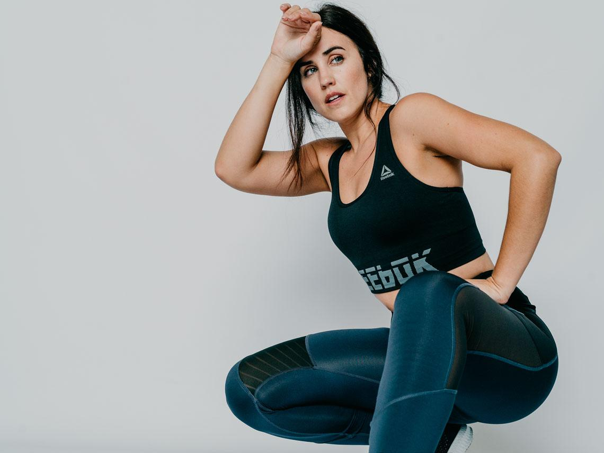

El blog de Tania
Diario de mi confinamiento
He creado este blog para ir escribiendo como son mis días durante la cuarentena.
¿Cómo es mi vida diaria?
Todos los días son iguales, menos los fines de semana, que cambio un poco la rutina.
Por las mañanas tengo siempre clases online del insti,y a veces, también las tengo de música. Por las tardes hago un poco de deporte y sigo haciendo el trabajo de clase que me falta. Algunos días tengo también clases del conservatorio por las tardes. El resto de mi tiempo lo dedico al ocio.
Las series y películas que he estado viendo

Cuando acabo de hacer todo lo que tengo que hacer en el día, como los deberes y ejercicio, veo la tele. Estos días he estado viendo varias series y películas.
- Glee
- La casa de papel
- Vis a vis
- Élite
- Kill Bill
- Outer Banks
A parte de las series que ya he visto, también quiero empezar a ver otras nuevas.
Series y películas que quiero ver
- Gossip girl
- Orphan black
- Cómo defender a un asesino
- A tres metros sobre el cielo
- Unorthodox
Estas son series que me han llamado la atención y que me gustaría ver cuando acabe las que estoy viendo ahora.
Para más series interesantes...
El resto de mi tiempo libre también hago otras cosas como escuchar música, leer, salir a correr o pasear. Estos días que ya podemos salir y quedar con amigos, pues suelo salir por las tardes.
Mis gustos y aficciones
Aprovecho mi blog para poder hablar sobre mis aficciones y gustos que me mantienen entretenida durante la cuarentena
Ya que el confinamento no nos ha dejado relacionarnos con nuestros amigos y familiares, hemos tenido que adaptarnos a las circunstancias y buscar una forma de matar el tiempo de forma entretenida. Así que estos días he estado haciendo varias cosas que me gusta hacer y que a veces no podía por falta de tiempo
Mis gustos
- Música
- Deporte
- Leer
- Ver series
Mis aficciones
- Tocar el violín
- Tocar el piano
- Jugar al balonmano
Estos días no he podido hacer todas las actividades que suelo hacer por las medidas que se han impuesto, así que me he tenido que conformar últimamente intentando seguir con mi rutina
Como no he podido ir a entrenar, he intentado mantenerme en forma a base de vídeos en internet de una famosa youtuber, Patry Jordán.
Dejo el enlace a su canal, por si estáis interesados en hacer sus rutinas. 